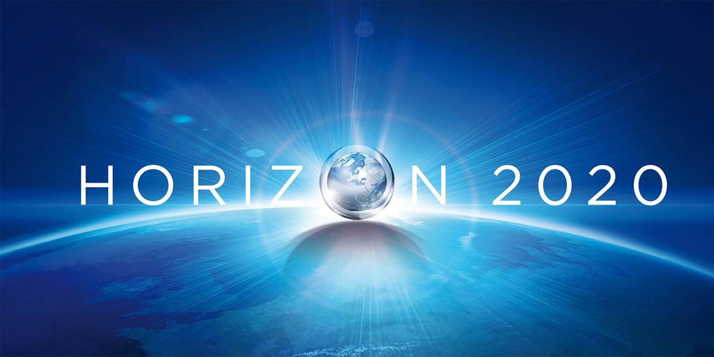

I+D+i
Investigacion, Desarrollo y Inovacion de la UE

¿Que es el Proyecto Horizon 2020?
- La Unión Europea concentró gran parte de sus actividades de investigación e innovación en el anterior Programa Marco denominado Horizonte 2020 (H2020). En el período 2014-2020 y mediante la implantación de tres pilares, ha contribuido a abordar los principales retos sociales, promover el liderazgo industrial en Europa y reforzar la excelencia de su base científica. El presupuesto disponible ha ascendido a 76.880 MEUR.
Objetivos del proyecto
- Crear una ciencia de excelencia, que permita reforzar la posición de la UE en el panorama científico mundial. Para ello:
Se ha incrementado considerablemente la dotación del Consejo Europeo de Investigación (ERC), que subvenciona a investigadores europeos del más alto nivel sin que sean necesario el trabajo en consorcio internacional y se amplía el campo de las tecnologías futuras cubriendo todos los sectores (FET).
Se han mantenido las actividades de Marie Curie para apoyar la formación, la movilidad y la cualificación de investigadores y las infraestructuras de investigación
- Desarrollar tecnologías y sus aplicaciones para mejorar la competitividad europea
Ha contado con importantes inversiones en tecnologías clave para la industria, como Tecnologías de la Información y Comunicación (TIC), las nanotecnologías, fabricación avanzada, la biotecnología y el espacio. En este apartado es necesario destacar las actividades para PYMEs que han podido participar en los proyectos colaborativos de los Retos sociales y de Tecnologías y para lo cual se establece como objetivo de financiación al menos el 20% del presupuesto.
Adicionalmente, estas empresas han tenido a su disposición el denominado "instrumento PYME" que ha podido financiar desde la evaluación del concepto y su viabilidad al desarrollo, demostración y replicación en el mercado y alcanzando incluso apoyos para la comercialización con servicios de ayuda para rentabilizar la explotación de los resultados. Este instrumento es bottom-up, sin consorcio mínimo y está dirigido a dar apoyo a aquellas PYMEs, tradicionales o innovadoras, que tenga la ambición de crecer e internacionalizarse a través de un proyecto de innovación de dimensión Europea.
- Investigar en las grandes cuestiones que afectan a los ciudadanos europeos--->
La atención se ha centrado en seis áreas esenciales para una vida mejor: salud, alimentación y agricultura incluyendo las ciencias del mar, energía, transporte, clima y materias primas, sociedades inclusivas y seguridad.
Los resultados se han dirigido a resolver problemas concretos de los ciudadanos. Como por ejemplo, el envejecimiento de la sociedad, la protección informática o la transición a una economía eficiente y baja en emisiones de carbono.
La participación en el Programa Marco se ha basado en competir con los mejores y en la mayoría de las veces con actividades en consorcio (grupos de investigación, empresas y usuarios) con las excepciones del Consejo Europeo de Investigación (ERC) y algunas acciones de movilidad y PYMEs. Como principales características de Horizonte 2020 cabe destacar:
la tasa de financiación de las actividades está alrededor del 20%
La duración de los proyectos es de unos 3 años y el presupuesto mayor de 2 MEUR salvo excepciones.
El objetivo es que los beneficiarios puedan comenzar sus trabajos en una media de plazo de 8 meses a partir del cierre de las convocatorias.
En estas condiciones, H2020 ha tenido unas condiciones de financiación óptimas: por lo general el 100% de los costes directos para todo tipo de entidades y el 70% en el caso de empresas trabajando en las fases de innovación; como costes indirectos se han considerado el 25% de los costes directos.
Como en el Séptimo Programa Marco, la mayoría de las actividades se han ejecutado mediante convocatorias anuales competitivas gestionadas por la Comisión con unas prioridades preestablecidas en los programas de trabajo que han sido públicos.
Además de las convocatorias ya tradicionales gestionadas por la Comisión, ha aumentado significativamente el número de las grandes iniciativas tanto públicas como privadas.
Entre las primeras, señalar las actividades conjuntas de los planes de I+D+I de los países (JPI) que han podido tener financiación importante de H2020 para sus propias convocatorias en función del grado de integración de las mismas: desde ERA Nets hasta su posible articulación mediante entidades legales (Art. 185).
Entre las segundas y desde una perspectiva industrial, destacar las Asociaciones Público Privadas lideradas por empresas (PPP contractuales) o Asociaciones Público Privadas institucionales (JTI). Ambas han establecido prioridades de I+D+i; su diferencia estriba en que la gestión de los fondos públicos y sus convocatorias las ha llevado a cabo la Comisión o las propias iniciativas, pudiendo incluso modificar algunas de las normas de participación comunes del H2020.
Juanma Alvarez Ferreira PR4 08/04/2022